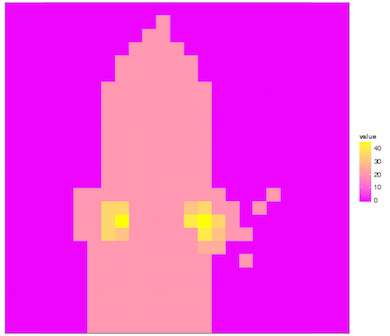

Example 1
X-ray CT scan of a rat treated with polyethylene glycol (PEG)-protected gold nanorods to allow visualization of tumors (from
Maltzahn et al.
). Example grid overlay: Temperature heat map example (artifical data, not taken from the paper).

Example 2
A 'Square' overlay representation of the above data, showing the non-linear grid with the respective intensity values.